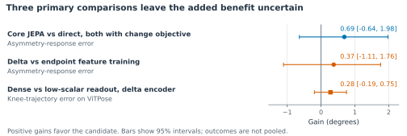
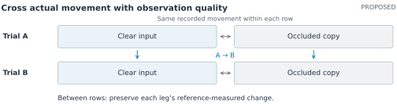

Preserving gait measurements in ambient mobility assessment
Theodore Mui · Research overview · September 2026
A possible application for older adults in Stanford HAI’s Sequoias study is an ambient mobility tool that distinguishes changes in walking from changes in how well a sensor observes them. Consider a camera view in which a chair briefly hides one leg. A pose estimator may place the knee incorrectly or exchange the left and right joint labels. A model that repairs these estimates could make the reconstructed walk look smoother while removing a real difference between the legs. If that reconstruction informed a mobility report, the resident and the person reviewing it could receive a misleading account of what changed.
Evaluating JEPA-Inspired Motion Representations Through Geometry and Gait Asymmetry examines this measurement problem before attempting a downstream assessment. [1] It asks whether learned motion features can restore noisy two-dimensional poses while preserving a controlled change in knee-motion asymmetry. The potential benefit is more dependable observation of a person’s movement across imperfect recordings, which could eventually support everyday mobility monitoring or comparison between biomechanics assessment sessions. The experiments use synthetic observations derived from motion capture; they do not evaluate Sequoias residents, balance outcomes, or fall prediction.
An unusual movement may be meaningful for the person being assessed. Making a reconstruction more symmetric could obscure a difference that an assessor needs to track. Biomechanics research has shown that more symmetric step lengths can coexist with asymmetric joint mechanics. [2] Preserving the relevant measurement, including its anatomical side, is therefore important before interpreting its implications for mobility.
Separating movement changes from observation errors
The study starts with walking candidates from AMASS, a motion-capture archive. Each approximately five-second window is paired with a version containing a synthetic right-knee edit. Fixed cameras project both motions into images, and three pose estimators produce the noisy joint observations. The experiment varies viewpoint and occlusion and deliberately exchanges input joint names. Clean projected joints remain available as references. This construction lets the researchers distinguish a change in movement from an error introduced while observing it, a distinction that would be difficult to establish from an uncalibrated home recording alone.
Training uses 1,645 windows from 112 people; evaluation uses 155 windows from fourteen different people. Each person’s edited, mirrored, and corrupted variants stay in the same split, reducing the risk that familiarity with an individual’s motion inflates performance. One pose estimator and the largest knee edit are withheld from fitting to probe transfer beyond the training inputs. These choices approximate parts of the variation an ambient system would encounter, while the synthetic setting leaves everyday clothing, walking aids, and clinical movement differences for later validation.
The target is a change in projected knee-motion asymmetry. For each leg, knee excursion is the ninety-fifth-percentile angle minus the fifth-percentile angle over a window. Asymmetry is right excursion minus left excursion; the response is how that difference changes between the original and edited motions. The reference is recomputed after projection because a three-dimensional knee edit need not produce the same angular change in the image. This outcome provides a controlled test of measurement preservation, although its clinical meaning has not been established.
Learning a representation that supports measurement
A joint-embedding predictive architecture, or JEPA, learns features by predicting a target’s numerical representation. Here, a student transformer receives noisy joint sequences with some joint-time regions masked, while a slowly updated teacher receives clean projected references during training. Matching the teacher’s features is intended to capture motion structure that helps recover obscured observations. The clean references provide privileged supervision, so the results concern this specific adaptation of JEPA to pose restoration.
The transformer uses the full observed window. A coordinate readout converts the resulting features back into joint positions. Each evaluation window is restored independently, so the completed task concerns recovering observed movement rather than forecasting it. Two additional training objectives compare matching each motion’s features separately with matching the feature difference between paired motions. The latter targets the change relevant to a repeated assessment, but shared errors can cancel across a pair while leaving either reconstructed movement inaccurate.
Controls compare unchanged poses, direct training on reference coordinates, and always predicting no asymmetry change. Feature-based readouts generally freeze their encoders; direct training updates both encoder and readout. The evaluation checks response error alongside knee-angle trajectories and anatomical naming because a single summary can hide incorrect timing or side assignment. Failed predictions remain in the scores, with fixed costs of 720° for response and 180° for trajectories. Results average within each person before combining people and training seeds, so extra rendered views do not count as extra participants.
What the comparisons showed
Direct coordinate training improves the noisy observations: mean knee-trajectory error falls from 18.57° to 12.07°, and asymmetry-response error falls from 12.69° to 7.54°. Yet always predicting no change scores 5.81°, below every one of the sixteen trained variants on the pooled response measure. Direct restoration beats that baseline in clear images but loses under occlusion. For a future Sequoias mobility report, this would make visibility a relevant condition for interpreting a measurement, even when processing returns a complete-looking skeleton.

Figure 1. Uncertain benefits in the three primary comparisons. Gains are comparator-minus-candidate errors. The first two concern response error and resample people and seeds; the third concerns ViTPose trajectories and uses a person-t interval after seed averaging. All reuse fourteen development people and three seeds. The core comparison uses the change objective for both methods, unlike the direct-coordinate result in the text.
The three primary comparisons leave the incremental benefits uncertain (Figure 1). Unequal initial gradient influence and the different adaptation permitted by frozen and jointly trained encoders further limit attribution to the learned representation.
Adding scalar-response and short-segment geometry penalties increases knee-trajectory error in every model family. Reducing the scalar penalty lowers this error from 23.17° to 19.47° for the delta model on the withheld pose estimator; supervising angular changes throughout the sequence yields a further, uncertain 0.28° improvement. For balance-assessment research, this supports inspecting trajectories alongside the reported summary, because agreement on an excursion change can conceal errors in how the knee moved through time.
Anatomical naming introduces a further concern for side-specific interpretation. When input leg names are globally exchanged, the combined rate of wrong, ambiguous, or missing assignments is approximately 81-83% for the endpoint and delta feature models, compared with 23% for direct coordinate training. These geometric checks use different eligibility rules from angular scoring. They show why a plausible reconstruction cannot by itself establish which leg changed, a distinction that matters when an assessor compares sides or discusses a change with a participant.
Implications for Sequoias and balance assessment
The paper’s contribution is an evaluation that exposes where pose restoration can misrepresent a movement measurement. A future mobility interface could attach visibility information to an estimate and let an assessor inspect the relevant recording. It would also need to distinguish an unsupported measurement from an unchanged gait. Whether these choices improve understanding or reduce unnecessary concern would require evaluation with residents and assessors.
A practical next study would fix the comparisons before evaluating new people, then test natural recordings against independent three-dimensional motion references. It should separate repeated views of the same movement with added occlusion from paired trials in which movement genuinely changes. Each leg’s trajectory and excursion change would need checking so that improved reconstruction does not erase an individual difference. Including walking aids and atypical gait would help determine when the method is useful to the intended participants. The current evidence comes from one repeatedly used development cohort and cannot establish performance in those settings.
For Sequoias, measurement validation would need to accompany resident control over sensing and a clear account of how estimates are used. A separate Stanford HCI participatory study with older adults in the Tenderloin documents concerns about surveillance and stigma. [3] A follow-up could examine how residents understand missing or uncertain measurements, and how assessors use that information when deciding whether to review a recording or repeat an assessment. This would connect the technical evaluation to decisions people make while living with and using an ambient system.
Sources
- Evaluating JEPA-Inspired Motion Representations Through Geometry and Gait Asymmetry. Version 08 manuscript and evidence, 2026. All experimental results above come from this paper.
- Padmanabhan et al. Persons post-stroke improve step length symmetry by walking asymmetrically. Journal of NeuroEngineering and Rehabilitation, 2020.
- So et al. “They Make Us Old Before We’re Old”: Designing Ethical Health Technology with and for Older Adults. CSCW, 2024. This was a separate participatory study, not the Sequoias evaluation.
Recommended continuation: determining when a gait change can be measured
Proposed research · Literature checked 28 September 2026
The strongest continuation is to study whether a change in each leg’s movement remains measurable when visibility deteriorates. A future Sequoias mobility report might compare recordings taken days apart, with one leg partly hidden in the later recording. The useful output would include an estimate of change and evidence that the comparison is supported. An unsupported comparison should remain distinguishable from an unchanged movement, especially when an assessor is deciding whether another observation would justify the burden of repeating an assessment.
The asymmetry study gives this question a concrete starting point. Direct coordinate supervision improves reconstruction, yet an always-zero response performs better on the pooled change measure. The exploratory visibility analysis locates an important failure under occlusion, while anatomical naming errors undermine side-specific interpretation. These findings motivate testing the reliability of a reported change. They provide limited support for choosing JEPA as the preferred architecture, so its contribution should remain an experimental question.
What would distinguish this study from existing work?
Several close precedents substantially narrow the opportunity. Stenum et al. already validate within-person, speed-related gait changes against motion capture in stroke and Parkinson’s disease. [4] DeepGaitLab evaluates baseline-adjusted step-length asymmetry during split-belt walking. [5] Cotton and Sinz reconstruct biomechanical trajectories with uncertainty, including asymmetric stroke gait and occlusion; their calibration uses detected keypoints because independent reference poses are unavailable. [6] Pace et al. evaluate uncertainty-based retention of reconstructed anatomical landmarks. [7] Repeatability and minimal detectable change are also established topics in smartphone biomechanics. [8]
The September 2026 SynthGait-19K preprint is especially relevant. Its GaitXFormer uses V-JEPA2 initialization, and its evaluations include controlled occlusion and within-patient directional changes associated with clinical scores. [9] Consequently, JEPA-based gait estimation, sensitivity to occlusion, and detecting movement change each have substantial precedent. OpenCap Monocular also already combines WHAM, pose refinement, and biomechanical modeling. [10]
The proposed contribution would be a method and evaluation for preserving independently measured changes in each leg while identifying comparisons that admit conflicting explanations under occlusion. The evaluation would test real movement changes and observation-only changes together. A new technical component would search for alternative trajectories that fit the landmark observations but imply a different knee-excursion change. Its value would depend on detecting misleading comparisons better than existing uncertainty estimates or simple visibility rules.
This is a plausible, bounded originality claim. The search found close work on every component, but did not identify a study demonstrating this complete measurement-specific test. That finding supports investigating the direction; it cannot establish that the idea has never appeared elsewhere. The independent novelty audit records the closest overlaps and the limits of this assessment.
An experiment that separates movement from visibility
Begin with synchronized video and an independent marker-based motion reference. For each person, select two prespecified walking trials, A and B, and derive each leg’s change from the reference measurements. The target is the observed difference between these trials; an instruction to walk differently does not establish its magnitude or a causal treatment effect. Knee excursion would retain the percentile definition used in v08, now applied to explicitly defined anatomical 3D flexion angles. This would be a new outcome, requiring its own repeatability assessment.

Figure 2. Proposed experiment; no results are shown. Digital masks change the target camera’s evidence while leaving the recorded movement and independent reference unchanged. Every clear/occluded combination of the two trials tests the same reference-defined change. A separate natural-occlusion evaluation would assess transfer beyond this controlled manipulation.
For the observation-only test, compare a recording with an occluded copy of itself. Any reconstructed change is an observation error. For the movement test, compare A with B under each visibility combination. A method that always returns zero can pass the first test while failing the second. Each leg must be scored separately because errors can cancel in a right-minus-left asymmetry summary. The full knee trajectories and anatomical assignment remain necessary checks.
Keep all variants from one person together, with separate people for fitting, calibration, and final evaluation. Fix trial support, pairing, camera conventions, and failure handling before testing. Occlusion should vary in duration and gait phase, including the period of greatest knee flexion. The reference cameras must remain unaffected by the digital masks. Marker placement, soft-tissue motion, and the reference body model introduce their own errors, so reference agreement must be interpreted alongside repeatability and model sensitivity.
Start with a small public-data pilot, verifying access to synchronized RGB, calibration, participant identifiers, and pairs with reference-resolvable knee changes. Public OpenCap data from ten healthy adults offer a starting point, although trunk-sway trials may provide insufficient knee variation. Its monocular refinement was tuned using these data, so final comparative claims require independent data. [10] Prespecify the balance of null and changed pairs and the change magnitudes evaluated. Later testing would need actual atypical gait and assistance, with natural occlusion held out from development; this pilot cannot establish performance for Sequoias residents.
Searching for a conflicting explanation
The method would start from a reconstruction and search for alternative lower-limb trajectories that agree with visible 2D landmark detections within calibrated tolerances, while increasing or decreasing each leg’s excursion change. Estimated hidden landmarks would remain unobserved. These alternatives test ambiguity under the landmark model; silhouettes might rule them out. The tolerances and smallest resolvable change would be fixed from a separate pilot and reference repeatability, without assuming a clinical threshold.
This search should begin offline with short sequences, known cameras, and independently calibrated body dimensions. It would retain consistent dimensions across trials while allowing session-specific camera parameters where appropriate. Joint limits and continuity would constrain the alternatives without requiring symmetric walking or similarity to a healthy gait template. These conditions establish limited kinematic admissibility. Claims about balance, joint loading, or muscle forces would require additional measurements and assumptions.
A local search explores only part of the possible movement space. A found alternative can demonstrate ambiguity under the stated constraints; an unsuccessful search cannot establish that the reported change is identifiable. Every candidate must pass an independent constraint check, and the exact percentile outcome must be recomputed if optimization uses a smooth approximation. Tests should record whether the reference trajectory is excluded by the assumptions, as well as sensitivity to initialization, camera uncertainty, and computation budget. Rigid-object methods such as CLOSURE and SLUE provide precedent for pose uncertainty sets and clarify the distinction between explored solutions and outer bounds. [11,12]
A small temporal refiner could combine a fixed 3D initialization with 2D pose features. Both versions would share a compatible 2D encoder and 3D readout, varying JEPA pretraining before identical supervised adaptation; pretraining data and compute would be reported separately. Supervision would cover each leg’s trajectory and excursion change, with occluded copies providing consistency examples. Geometry and ambiguity search would be separate ablations. The v08 loss results make matched loss-weight selection and checks for erased changes essential.
The reporting rule would retain or decline an entire trial pair; removing uncertain frames could erase peak flexion. Intervals would be calibrated jointly for both legs on independent people, accounting for repeated pairs and following task-level uncertainty methods. [13] An interval wholly beyond the resolution band around zero supports a change; one wholly inside supports a change smaller than that resolution. Other cases remain inconclusive. Coverage must be checked after selection and within gait and visibility groups, without a guarantee for each resident.
On all reference-eligible pairs, first test noninferiority on per-leg change error against the locked baseline using the pilot-derived margin, then test trajectory superiority. Include failures under a prespecified rule and retain zero-response and interpolation controls. Separately compare search flags with visibility thresholds, calibrated intervals, and ensemble disagreement at matched retention: the proportion of complete comparisons reported. Count false changes, missed changes, and wrong-side reports, and audit retention across difficult cases. Confidence intervals would resample people with all their pairs. A simple rule performing equally well would remove the case for the extra search cost.
Feasibility, scientific value, and later extensions
The first deliverable should be a locked evaluation protocol and baseline audit, followed by a limited feasibility test of the ambiguity search. The v08 checkpoints and full prediction artifacts would need recovery or regeneration before claiming a direct replication. Existing reconstruction tools and a small refiner keep the new study within reach without training a foundation model. The main dependencies are suitable reference data and a biomechanics collaborator to establish measurement conventions. Sample size should follow pilot estimates of between-person variation and the chosen preservation margin.
Among the directions in the plan, calibrated 3D observation and transparent biomechanical constraints most directly support this experiment. Depth or an additional view could then be evaluated by whether it resolves an ambiguous comparison. OpenSim-derived training losses deserve a later ablation once their assumptions can be checked independently. Robot dynamics, full movement generation, and joint human-object generation add substantial modeling requirements before the present measurement problem is resolved. A Qwen agent trained with reinforcement learning would be justified in this project after a fixed tool pipeline demonstrates which additional observations improve the comparison and what they cost the participant.
The scientific value would come from establishing when restoration preserves a meaningful individual difference and when the available evidence is insufficient. A well-controlled negative result could identify failure conditions and provide a reusable test for future representations. For HCI, a subsequent study could examine how residents and assessors interpret a qualified measurement, an unavailable comparison, or a request for another observation, while respecting residents’ control over sensing. Those studies would determine whether the technical gains improve decisions or reduce unnecessary effort; the proposed knee measurements alone would not establish fall risk or clinical benefit.
Sources for the proposed direction
- Stenum et al. Clinical gait analysis using video-based pose estimation: Multiple perspectives, clinical populations, and measuring change. PLOS Digital Health, 2024.
- Shin et al. DeepGaitLab: Accurate and Flexible Markerless Motion Tracking Powered by Synthetic Data. Research Square preprint, July 2026.
- Cotton and Sinz. Biomechanical Reconstruction with Confidence Intervals from Multiview Markerless Motion Capture. EMBC, 2025.
- Pace et al. Uncertainty-Aware Mapping from 3D Keypoints to Anatomical Landmarks for Markerless Biomechanics. arXiv preprint, March 2026.
- Horsak, Kainz, and Dumphart. Repeatability and minimal detectable change including clothing effects for smartphone-based 3D markerless motion capture. Journal of Biomechanics, 2024.
- Mehraban et al. SynthGait-19K: A Physically Grounded Synthetic Video Dataset for Gait Parameter Estimation. arXiv preprint, including Appendices E.2 and F.4, September 2026.
- Gilon, Miller, and Uhlrich. OpenCap Monocular: 3D Human Kinematics and Musculoskeletal Dynamics from a Single Smartphone Video. arXiv preprint, March 2026.
- Gao et al. CLOSURE: Fast Quantification of Pose Uncertainty Sets. Robotics: Science and Systems, 2024.
- Shaikewitz, Georgiou, and Carlone. Uncertainty Quantification for Visual Object Pose Estimation: S-Lemma Ellipsoidal Bounds. IEEE Transactions on Robotics, 2026.
- Wen, Ahmad, and Schniter. Task-Driven Uncertainty Quantification in Inverse Problems via Conformal Prediction. ECCV, 2024.
The supporting independent novelty audit and search record document additional precedents, design objections, and source-access limits. All experiments in this section are proposed.